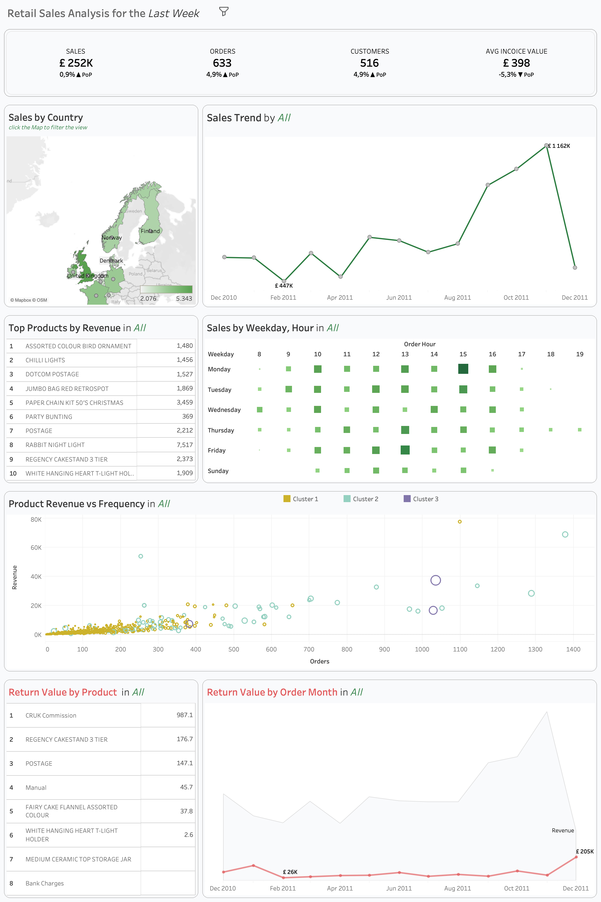
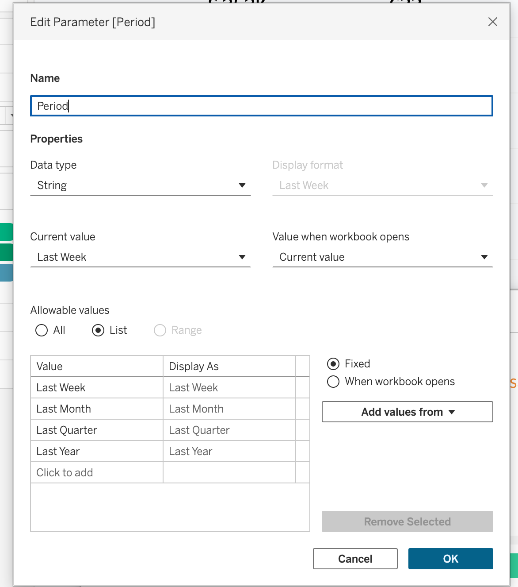
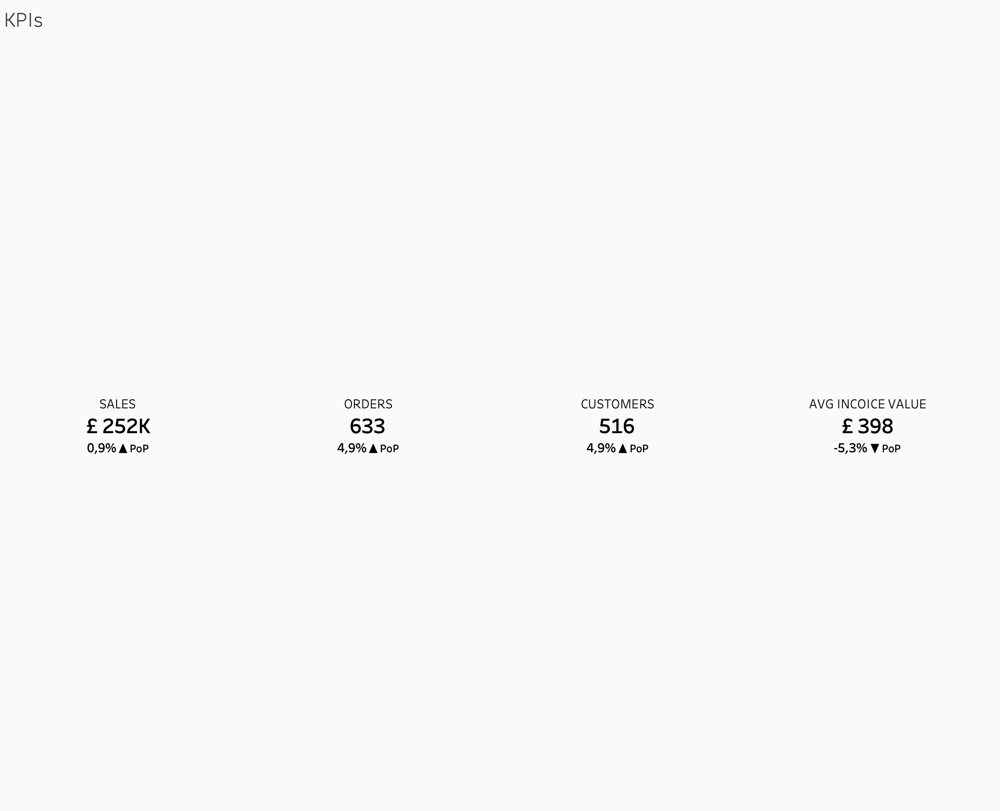
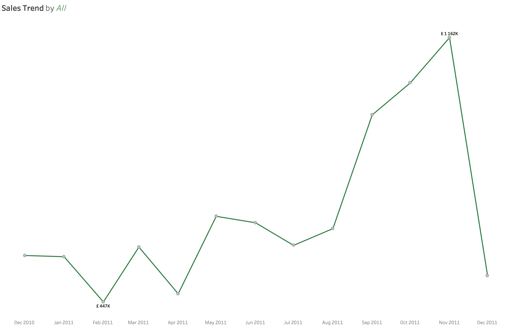
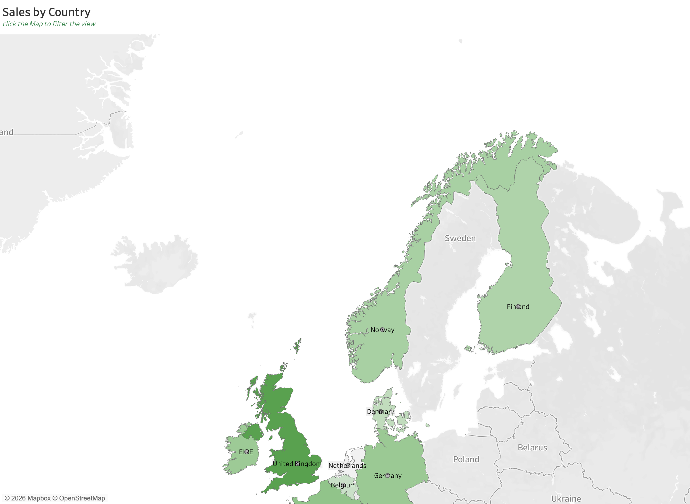
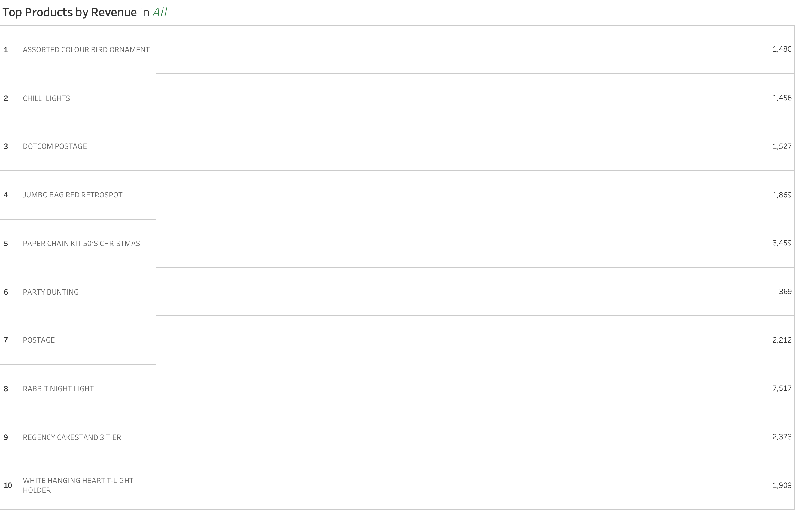

flowchart TB A[KPI Section] B[Sales Trend] C[Sales by Country] D[Top Products] E[Customer Analysis] F[RFM Analysis] G[Cohort Retention] A --> B A --> C A --> D B --> E C --> F D --> G
Session 05: Sales Analysis Dashboard
Advanced Dashboards
tableau
Retail Sales Analysis Dashboard | Tableau Build Guide
Dashboard Goal
The purpose of this dashboard is to analyze retail business performance using:
- Sales trends
- Customer behavior
- Product performance
- Retention analysis
- RFM segmentation
- Geographic analysis
- Time-based purchasing behavior
The dashboard should help business users answer:
- Are sales increasing over time?
- Which products generate the highest revenue?
- Which customers are most valuable?
- How frequently do customers purchase?
- Which customer segments are most important?
- How strong is customer retention?
- Which countries generate the most sales?
The dashboard should feel:
- Modern
- Minimalistic
- Executive-level
- Professional
- Presentation-ready
Dataset Overview
The Tableau workbook contains multiple analytical worksheets focused on retail performance analysis.
Main analytical areas include:
| Analysis Area | Business Purpose |
|---|---|
| KPI Section | High-level business overview |
| Sales Trend | Revenue trend analysis |
| Geographic Analysis | Country-level sales analysis |
| Product Performance | Best-selling product analysis |
| Customer Analysis | Customer value analysis |
| RFM Analysis | Customer segmentation |
| Cohort Analysis | Retention analysis |
| Time Analysis | Purchase behavior analysis |

Recommended Dashboard Structure
Recommended Dashboard Size
| Element | Recommendation |
|---|---|
| Dashboard Size | 1400 × 900 |
| Layout | Tiled |
| Device Layout | Desktop |
| Outer Padding | 20–30 px |
| Space Between Containers | 10–20 px |
A fixed dashboard size helps maintain alignment consistency and improves presentation quality.
Dashboard Visual Hierarchy
The dashboard should follow a clear visual hierarchy.
The user should first see:
- KPI Section
- Sales Trends
- Geographic and Product Analysis
- Customer Analysis
- Cohort and Retention Analysis
The layout should naturally guide the user from summary insights into deeper analytical exploration.
Step 0 | Calculated Fields and Parameters
Period | Parameter

Valid Sale | Calculated Field
Filter variable to test
NOT [Is Cancelled]
AND [Quantity] > 0
AND [Unit Price] > 0
AND NOT ISNULL([Customer ID])Current Period Sales | Calculated Field
IF [Period] = "Last Week" THEN
IF DATETRUNC('week', DATE([Invoice Date])) =
DATEADD('week', -1, DATETRUNC('week', [Max Order Date]))
THEN [Sales]
END
ELSEIF [Period] = "Last Month" THEN
IF DATETRUNC('month', DATE([Invoice Date])) =
DATEADD('month', -1, DATETRUNC('month', [Max Order Date]))
THEN [Sales]
END
ELSEIF [Period] = "Last Quarter" THEN
IF DATETRUNC('quarter', DATE([Invoice Date])) =
DATEADD('quarter', -1, DATETRUNC('quarter', [Max Order Date]))
THEN [Sales]
END
ELSEIF [Period] = "Last Year" THEN
IF DATETRUNC('year', DATE([Invoice Date])) =
DATEADD('year', -1, DATETRUNC('year', [Max Order Date]))
THEN [Sales]
END
ENDCurrent Period Sales | Calculated Field
IF SUM([Previous Period Sales]) = 0 THEN NULL
ELSE
(SUM([Current Period Sales]) - SUM([Previous Period Sales]))
/ SUM([Previous Period Sales])
ENDSales PoP % | Calculated Field
IF SUM([Previous Period Sales]) = 0 THEN NULL
ELSE
(SUM([Current Period Sales]) - SUM([Previous Period Sales]))
/ SUM([Previous Period Sales])
ENDSales Icon | Calculated Field
IF ZN([Sales PoP % ]) = 0 THEN ""
ELSEIF [Sales PoP % ] > 0 THEN "▲"
ELSEIF [Sales PoP % ] < 0 THEN "▼"
ENDStep 1 | Build KPI Section
Purpose of KPI Section
The KPI section provides an instant overview of overall business health.
The KPI cards should be positioned at the top of the dashboard because they establish the business context before deeper analysis begins.

Recommended KPIs
| KPI | Business Meaning |
|---|---|
| Total Revenue | Total generated sales |
| Total Orders | Number of transactions |
| Total Customers | Unique customer count |
| AVG Revenue per Customer | Customer value |
| Growth % | Performance comparison |
Recommended KPI Layout
flowchart LR
A[Revenue KPI]
B[Orders KPI]
C[Customers KPI]
D[AVG Revenue KPI]
A --> B
B --> C
C --> D
KPI Card Design Rules
Each KPI card should contain:
- Large KPI value
- KPI subtitle
- Growth percentage
- Previous period comparison
- Directional indicator
The KPI value should always be visually dominant.
KPI Color Rules
| Situation | Color |
|---|---|
| Positive Growth | Green |
| Negative Growth | Red |
| Neutral | Gray |
Use directional arrows to reinforce performance visually.
KPI Card Size Recommendations
| Element | Recommendation |
|---|---|
| Width | 240–280 px |
| Height | 120–150 px |
| Inner Padding | 10–15 px |
| Space Between Cards | 15–20 px |
All KPI cards should maintain identical sizing for visual consistency.
Recommended Typography Hierarchy
| Element | Font Size | Weight |
|---|---|---|
| Dashboard Title | 24–32 px | Bold |
| Section Titles | 16–20 px | Semi-bold |
| KPI Values | 28–40 px | Bold |
| KPI Labels | 11–14 px | Regular |
| Growth % | 12–16 px | Semi-bold |
Recommended Tableau Fonts
| Font | Usage |
|---|---|
| Tableau Book | Default dashboard text |
| Tableau Medium | KPI values and titles |
| Arial | Universal readability |
| Verdana | Small dashboard labels |
Recommended Google Fonts
| Font | Style |
|---|---|
| Inter | Modern KPI typography |
| Roboto | Clean dashboard labels |
| Open Sans | Professional readability |
| Montserrat | Strong dashboard titles |
| Source Sans 3 | Analytical styling |
Step 2 | Build Sales Trend Analysis
Purpose of Sales Trend Chart
The Sales Trend chart helps users understand how business performance changes over time.
This is usually the primary analytical chart after the KPI section.
The chart should help users identify:
- Growth trends
- Declines
- Seasonality
- Performance spikes
- Long-term business direction
Recommended Chart Type
Use:
- Line Chart
Optional enhancements:
- Dual-axis line chart
- Trend line
- Moving average

Recommended Sales Trend Layout
flowchart TB A[Date] B[Revenue Trend] C[Growth Analysis] A --> B B --> C
Sales Trend Design Rules
Do:
- Highlight latest point
- Use minimal gridlines
- Use one dominant color
- Keep labels minimal
- Maintain smooth visual flow
Avoid:
- Too many colors
- Heavy formatting
- Excessive labels
- Too many trend lines
Recommended Sales Trend Styling
| Element | Recommendation |
|---|---|
| Line Width | Medium |
| Gridlines | Soft |
| Labels | Minimal |
| Colors | Single dominant color |
Step 3 | Build Geographic Analysis
Purpose of Geographic Analysis
The geographic analysis section helps users identify which countries or regions generate the highest revenue.
This analysis helps answer:
- Which markets perform best?
- Which regions need attention?
- Where are business opportunities concentrated?

Recommended Chart Types
Use:
- Filled Map
- Symbol Map
- Horizontal Bar Chart
Geographic Analysis Design Rules
If using maps:
- Use soft color gradients
- Highlight key regions
- Keep labels minimal
If using bars:
- Sort descending
- Show regional contribution %
Maps should support analysis rather than decoration.
Step 4 | Build Product Performance Analysis
Purpose of Product Analysis
The product section identifies:
- Best-selling products
- Low-performing products
- Revenue contribution
- Product demand
This section helps stakeholders identify opportunities and risks quickly.
Recommended Chart Types
Use:
- Horizontal Bar Charts
- Highlight Tables
- Treemaps

Product Analysis Design Rules
Do:
- Sort descending
- Highlight top products
- Keep labels readable
- Use consistent colors
Avoid:
- Too many products displayed
- Tiny unreadable labels
- Excessive color variations
Step 5 | Build Customer Analysis
Purpose of Customer Analysis
The customer section helps explain customer behavior and customer value.
This analysis should help answer:
- Who are the most valuable customers?
- How frequently do customers purchase?
- Which customer segments are strongest?
Recommended Customer Metrics
| Metric | Purpose |
|---|---|
| Customer Count | Customer growth |
| Average Order Value | Customer quality |
| Revenue per Customer | Customer value |
| Purchase Frequency | Engagement |
Recommended Chart Types
Use:
- Bar Charts
- Scatter Plots
- Donut Charts
Step 6 | Build RFM Analysis
Purpose of RFM Analysis
RFM stands for:
- Recency
- Frequency
- Monetary
This analysis helps identify customer quality and engagement.
RFM Definitions
| Metric | Meaning |
|---|---|
| Recency | How recently customer purchased |
| Frequency | How often customer purchases |
| Monetary | How much customer spends |
Recommended RFM Visuals
Use:
- Heatmaps
- Scatter Plots
- Segment Tables
Step 7 | Build Cohort Retention Analysis
Purpose of Cohort Analysis
The cohort section helps understand customer retention over time.
This analysis answers:
- How many customers return?
- How quickly do customers churn?
- Which acquisition periods perform best?
Recommended Cohort Visual
Use:
- Heatmap
The heatmap should show retention percentage over time.
Step 8 | Build Time-Based Behavioral Analysis
Purpose of Time Analysis
This section helps identify purchasing behavior patterns.
Possible analyses:
- Sales by Weekday
- Sales by Hour
- Peak purchasing periods
Recommended Chart Types
Use:
- Heatmaps
- Line Charts
- Bar Charts
Filter Design Rules
Recommended Filters
Use:
- Date
- Country
- Product Category
- Customer Segment
Recommended Filter Placement
Filters should appear:
- Left side
- Top navigation area
Filters should remain compact and easy to use.
Recommended Tableau Features
Students Should Practice
- Parameters
- Dynamic Titles
- Dashboard Actions
- Highlight Actions
- Filter Actions
- Conditional Formatting
- Tooltips
- Containers
- Calculated Fields
Important Tableau Functions
| Function | Purpose |
|---|---|
| SUM() | Aggregation |
| COUNTD() | Unique count |
| IF | Conditional logic |
| DATEADD() | Date shifting |
| DATETRUNC() | Date grouping |
| WINDOW_SUM() | Table calculations |
| RANK() | Ranking |
| FIXED LOD | Stable aggregation |
Growth Percentage Calculation
(
SUM([Current Period Revenue]) -
SUM([Previous Period Revenue])
)
/
SUM([Previous Period Revenue])Container Structure
flowchart TB A[Main Vertical Container] A --> B[KPI Horizontal Container] A --> C[Middle Analytics Section] A --> D[Bottom Supporting Charts] C --> E[Sales Trend] C --> F[Geographic Analysis] C --> G[Product Analysis]
Dashboard Design Principles
A professional dashboard should:
- Guide user attention
- Prioritize important insights
- Reduce clutter
- Maintain spacing consistency
- Support storytelling
- Simplify decision-making
The dashboard should feel analytical and structured rather than visually crowded.
Common Dashboard Mistakes
Avoid:
- Too many chart types
- Excessive colors
- Tiny labels
- Misaligned containers
- Heavy borders
- Decorative visualizations
- Overcrowded layouts
Every dashboard element should have a clear analytical purpose.
Final Dashboard Checklist
Before publishing:
- KPI section visually dominant
- Charts aligned properly
- Colors consistent
- Font hierarchy clear
- Filters functional
- Tooltips readable
- Interactions working
- Dashboard spacing balanced
- Storytelling understandable
- Dashboard presentation-ready
Resources
GitHub
Tableau Course Code Repository for this session is available in the GitHub repository linked above. It includes:
- Tableau workbook with all examples
- Sample datasets